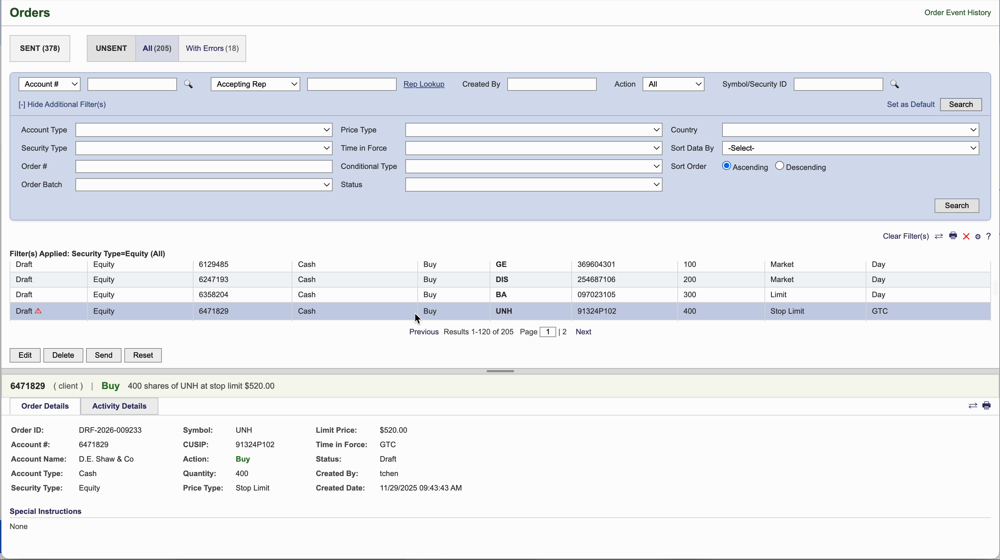
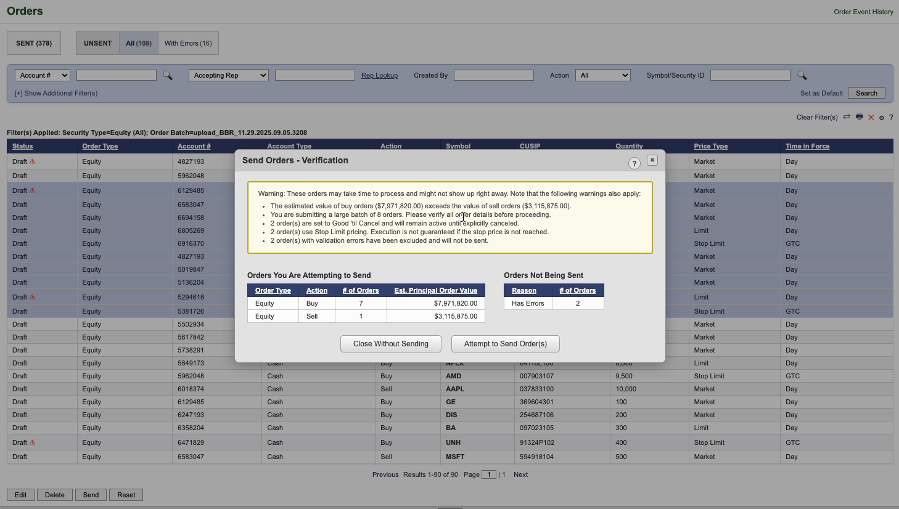
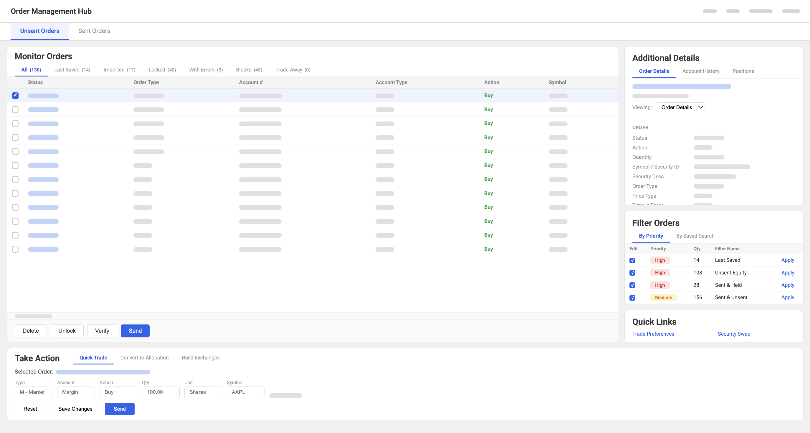
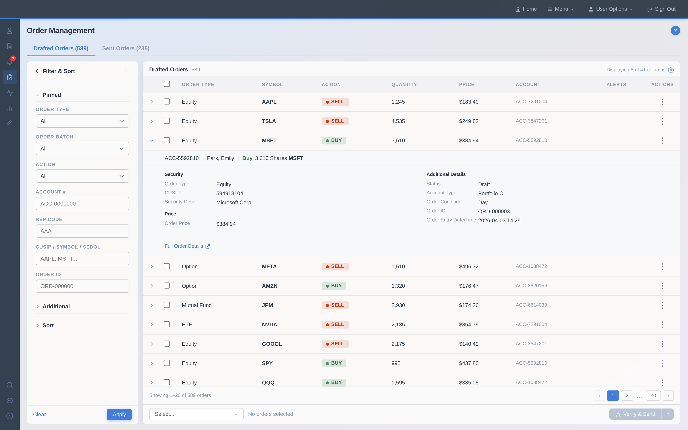
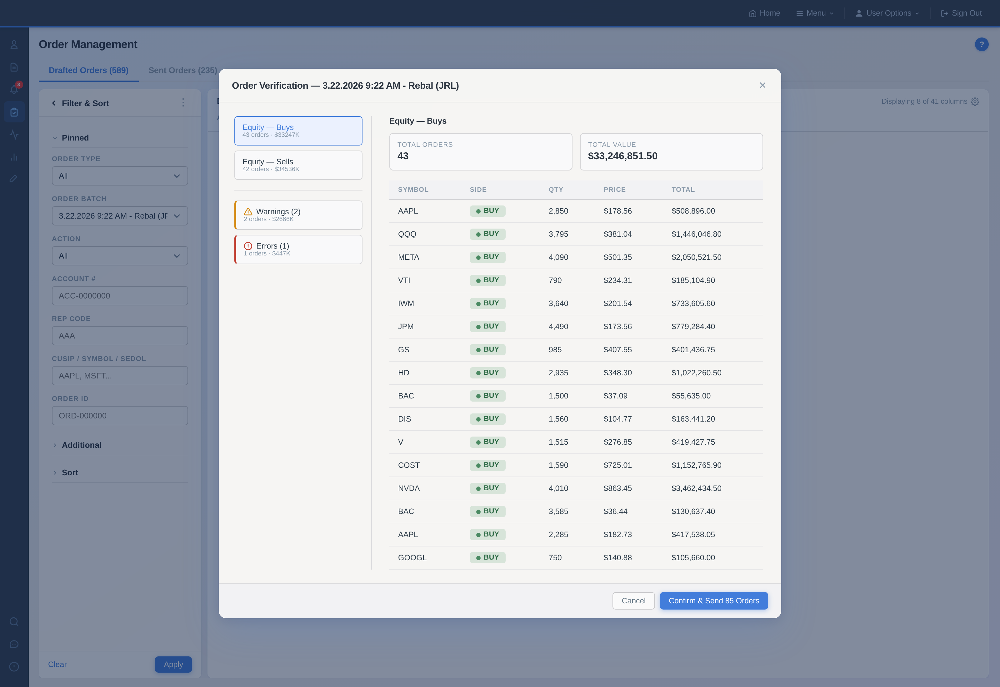

Addition Through Subtraction
Pivoting from a feature‑heavy dashboard to a focused, essential workflow that unlocked a clean component and layout pattern used across multiple applications.
tl;dr
Context
- A redesign of a central trading surface as part of a platform modernization
- An app that houses all trading activity and allows investment professionals to monitor and execute orders at the market
- Used by traders across >3,300 institutional advisory firms with ~$1.6T in AUM and 8.7M accounts
- Trade errors on this surface carry enormous financial and regulatory consequences
tl;dr
Approach
- Early research revealed our initial instinct — a feature-rich dashboard — was the wrong direction
- Traders needed speed and inline context for critical actions, not more controls
- I pivoted to an essentials-first redesign built within real technical and accessibility constraints
Outcome
- A full redesign — shipped with 100% positive pilot feedback
- A new filter component — adopted by 2 additional products immediately after launch
- Design System adopting this filtering mechanism as platform-wide standard (impacting 15+ apps)
- A shared AG-Grid stylesheet — enabling 20+ product teams and 30+ devs to consume a more robust data grid without custom code
At the center of every trade
A misstep on this screen ripples across every team and system that touches a trade.

map-x2.png.The system users lived in
Here's what users were working with every day: three compounding pain points that made a high-stakes workflow harder than it needed to be.
The Spatial Problem
Filters and order details both expanded vertically, collapsing the orders table from opposite ends. Users couldn't filter, review details, and see their list at the same time — forcing constant trade-offs in a workflow where all three mattered.

legacy-spatial-1.mov (still).Hidden Actions & the Blind Send Flow
Hidden Actions
There was no visible way to select orders — bulk actions were buried behind shift-clicks and right-click menus. In a workflow built around acting on multiple orders at once, there was no visual affordance for this critical action.
The Blind Send Flow
The send flow offered no visibility into what was being sent or why errors existed — just vague options and a confirmation screen with nothing actionable. Sending orders is the highest-stakes moment in the workflow, and users were doing it blind.

legacy-hidden-actions.mov (still), legacy-blind-send.mov (still).What users actually needed
Early signals suggested users needed a broader view — a centralized dashboard to monitor and act across orders. I tested that direction before committing to it, and what I found reframed the entire problem.
01 — The list was the work.
Users spent most of their time scanning and working through orders, not navigating a broad control center.
02 — Details needed to be closer.
Users wanted order-level context and alerts on the same surface, without opening a separate page.
03 — Reliability beat flash.
In time-sensitive work, predictability and speed mattered more than a sleek, feature-rich experience.
04 — Confidence before sending.
Before acting on a filtered set of orders, traders needed to be certain they were looking at exactly the right subset. Ambiguity at the send step isn't a UX inconvenience — it's a compliance and financial risk.
How I got there: Testing the dashboard hypothesis
Exploratory interviews surfaced fragmentation as the core pain — orders, details, and actions spread across too many surfaces. That pointed toward a centralized dashboard as the natural fix, so I tested that direction with ~20 traders across clearing and custody using rough concept feedback as a gut check, not a polished study.

concept-1.png.Dashboard vs. enhanced table — eye path comparison
Dashboard layout — chaotic eye path
Numbered flow crosses the screen: 1 Check alerts → 2 Scan list → 3 Read details → 4 Act.
Enhanced table — clean left-to-right scan
Numbered flow reads cleanly left to right: 1 Filter icon in grid header → 2 Scan filtered list, spot highlighted row → 3 Check details in side panel.
The reframe
The research told a different story. The dashboard was doing too much — they wanted the list, made faster. Their core need wasn't to see everything at once, but to move quickly between the order list and the few details needed to act without losing their place.
"It works like a Honda Accord. Not flashy, but reliable."— Senior Adviser, Custody firm
That framing clarified something important: reliability wasn't just a preference. In a time-sensitive trading workflow, slow, broken, or inaccessible tools carry real cost.
Rules for every decision
Research and concept feedback shaped a set of guiding principles for the redesign.
01 — Protect the table
The order list never shrinks or hides.
02 — Go horizontal
Free up vertical space; move supporting UI into a horizontal layer.
03 — Surface relevant actions
The next step should be obvious from the state of the row.
04 — Confirm, don't assume.
The send step must make the active filter state and order subset unambiguous — so traders act with certainty, not hope.
Shipped in v1 vs. deferred to roadmap
Shipped in v1
- Horizontal layout
- Configurable views
- Clear selection and bulk actions
- Redesigned send flow
- Order details panel
- Active filter chips
Deferred to roadmap
- Proactive alerting
- Supporting utilities (live quotes, positions, balances)
- Deeper cross-linking between workflow steps
A surface built to protect the list
Filters
Wanted a pill-based filter pattern, but the design system couldn't support new components. I composed a horizontal, collapsible filter panel from existing atoms instead. Active filter pills above the table show at a glance what's included or excluded — the goal was for filtering to feel nearly automatic: set once per session, then out of the way.
Table
Rebalanced the table for a clean left‑to‑right scan: key signals first, status and alerts aligned by column, and hover/tap affordances that keep actions close to where work happens.
Order Details
Brought essential order details into a side panel so traders can inspect, fix, and confirm without losing their place in the list.

filters.mov (still), table.mov (still), order-details.mov (still).Surfacing the right next step.
Smart Selection
Checkboxes plus a "Select…" dropdown with counts (on page, matching filters, all buys, all sells, etc.) turn bulk actions into clear, informed choices before sending.
Verification Modal
A verification step that reads back the action in plain language, highlights risk, and gives a clear escape hatch before anything goes out the door.
Cross-Linking & Feedback
Subtle links and toasts connect this surface to related tools and states, so traders always know what happened and where to go next.

smart-selection.mov (still), verification-modal.mov (still), cross-linking-feedback.mov (still).Working within reality
Every design decision had to clear four hard constraints simultaneously — and those constraints defined what shipped. Each one had to reconcile AG Grid's capabilities, our design system, backend limits, and strict accessibility standards. The gap between ideal and shippable defined both the MVP and the backlog.
- AG Grid filters vs. accessibility — Native in‑column filters failed accessibility and clashed with our system components, so I composed a persistent horizontal filter panel from existing atoms instead.
- Live quotes and logos — Security logos and live quotes were technically feasible, but loading live or even recent data across multiple rows created a noticeable performance cost. I kept the design ready and deferred the feature.
- Account‑level data for every trade — Showing full account context for each row would have overloaded the backend. I chose progressive disclosure instead and moved full account views to a later phase.
- Saved views — Saved views required backend persistence we didn't have in scope. I still designed for that future state and tracked it alongside in‑column filtering and other AG Grid enhancements for post‑MVP.
What shipped & what it changed
Post-launch analytics weren't surfaced to design in this institutional environment — outcomes reflect pilot observation and cross-team adoption signals.
For users
- Filter without losing the list.
- See issues at a glance with row‑level indicators.
- Select with clear, visible affordances for bulk actions.
- Review with full error transparency before sending.
- Track confirmation and execution states in one place.
- Configure views to match daily workflow.
For the product & org
- The horizontal filter pattern was adopted by 2 product areas post-launch, with several more evaluating it and the design system team pursuing platform-wide adoption across ~15 filtering apps.
- Pilot user office hours returned 100% positive feedback — the strongest signal available in an environment without post-launch analytics surfaced to design.
- The work established a research-driven playbook and a clear roadmap for the next phase as backend and data constraints catch up.
Legacy vs. Shipped
Order management surface
Send flow
Legacy and shipped stills placed side by side for both the main surface and the send flow. On the live site these open in a full-screen compare tour (Order management surface, Send flow).
legacy-still.png, shipped-still.png, legacy-send-still.png, shipped-send-still.png.What we learned after launch
I piloted the new surface with users who had access to both the legacy and redesigned experiences. That gave us a clear read on where the changes landed and where the remaining friction still lived.
Tab clarity
Sent and Draft states weren't distinct enough; some users missed the state change. This pushed us to strengthen the tab treatment and rely less on subtle cues.
Details interaction
The drawer pattern interrupted grid scrolling. That feedback opened the door to a split-panel pattern that kept the list and details active at the same time.
Error scanning
Scanning for issues across large order sets still required too much visual effort. I used that signal to explore stronger row-level indicators and smarter defaults for error views.
pre.mov (still, Piloted), post.mov (still, Post-Pilot).Where this surface can grow
Some high-value ideas were intentionally deferred — not because they lacked value, but because they depended on data, backend support, or more time in the wild. Saved views would let the surface open in a familiar, ready-to-work state, remembering the filters, columns, and sort preferences that matter most to each user. As accessibility and system support improve, filtering can evolve from the persistent panel toward lighter inline patterns. Deeper account context — positions, balances, relevant signals — can pull into the flow only when needed, and context-aware assistance can surface next-best actions without making the screen busier.
Why the simpler answer was the right one
There's a version of this case study where the punchline is a brand-new dashboard. Instead, what shipped was a better version of what users already trusted: modernized filtering, a layout that respects how people actually scan a list, order details you can reach without losing your place, and a send flow that builds confidence instead of anxiety. Exploring the heavier, feature-rich direction first gave us the evidence to walk back to the simple one with conviction. For me, that's the core of the work: use research to cut through "more" as the default answer, protect the parts of the system people already rely on, and ship only the changes that make their day feel calmer, clearer, and more automatic.